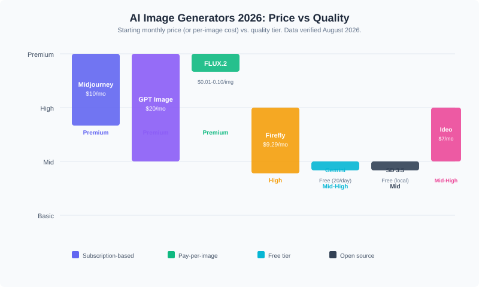

Best AI Image Generators in 2026: 7 Tools Compared
TL;DR: Which AI Image Generator Should You Pick?
Midjourney V7 wins for overall image quality in 2026. GPT Image 1.5 (via ChatGPT) dominates when you need accurate text inside images. FLUX.2 is the smart pick for developers and high-volume API work. Adobe Firefly remains the safest choice for commercial projects where copyright clarity matters. Google Gemini gives you 20 free images a day. Stable Diffusion 3.5 offers total control for anyone willing to set up local hardware. Ideogram 3.0 handles logos and typography better than most paid competitors.
The gap between paid and free tools has narrowed considerably since last year. Open-weight models like FLUX.2 now trade blows with proprietary giants in blind benchmarks. The right pick still depends on what you are actually making.
How Do These Generators Actually Compare in 2026?

| Generator | Starting Price | Free Tier | Best For | CTA |
|---|---|---|---|---|
| Midjourney V7 | $10/mo | None | Aesthetic quality, art direction | Try Midjourney |
| GPT Image 1.5 (ChatGPT) | $20/mo (Plus) | Limited daily | Text-in-image, prompt accuracy | Try ChatGPT |
| FLUX.2 | $0.01/image | Open-weight (free) | API pipelines, photorealism | Try FLUX.2 |
| Adobe Firefly | $9.29/mo | 25 credits/mo | Commercial-safe assets | Try Firefly |
| Google Gemini | Free (20/day) | 20 images/day | Everyday free use | Try Gemini |
| Stable Diffusion 3.5 | Free (open source) | Fully free | Local control, customization | Get SD 3.5 |
| Ideogram 3.0 | $7/mo | 10/day | Logos, typography, banners | Try Ideogram |
What Makes Midjourney V7 the Aesthetic Leader?
Midjourney V7, released in mid-2025 and now the default model, rebuilt its architecture from the ground up. Texture rendering, hand detail, and fabric coherence all jumped noticeably. The new Omni Reference feature maintains character consistency across multiple images in a series, which matters if you are building a brand identity or illustrating a story arc.
The Basic plan starts at $10 per month with roughly 3.3 fast GPU hours. The Standard tier at $30 adds unlimited relaxed-mode generations. Annual billing knocks about 20 percent off each tier.
Where Midjourney falls short: no free tier, no public API, and text-in-image rendering still trails GPT Image 1.5. You are paying for that unmistakable cinematic look, not for developer tooling.
Best for: Designers, illustrators, and anyone whose primary deliverable is a single polished visual.
Is GPT Image 1.5 Actually Better at Text Rendering?
Yes. OpenAI integrated text and image generation into a single unified architecture, which gives GPT Image 1.5 (the model that replaced DALL-E 3) a clear edge when images contain readable typography, logos, or signage. In blind benchmarks on the LM Arena leaderboard, it scored 1,264, placing it at or near the top of all tested models.
ChatGPT Plus at $20 per month includes roughly 80 image generations every 3 hours. The Pro plan at $200 per month lifts generation limits entirely. Paid subscribers retain full commercial rights to all outputs.
The tradeoff is stricter content filtering. If your work involves edgy or experimental imagery, Midjourney gives you more creative latitude.
Best for: Marketing teams, social media managers, and anyone who needs images with correct text inside them.
Why FLUX.2 Deserves Your Attention
FLUX.2 from Black Forest Labs, the team behind the original Stable Diffusion development, now matches or exceeds GPT Image 1.5 in photorealistic benchmarks. The open-weight model simulates optical physics in ways other generators do not, from volumetric lighting to surface reflections.
API pricing runs between $0.01 and $0.10 per image depending on variant and resolution. The Schnell variant generates images in under a second. You can also run FLUX.2 locally if you have 12 to 16 GB of VRAM.
The catch: text rendering is still a weakness, and local setup requires technical comfort.
Best for: Developers building image pipelines, product photographers, and teams that want per-image cost control.
Which Generator Is Safest for Commercial Use?
Adobe Firefly was trained exclusively on licensed content, which eliminates the copyright ambiguity that shadows other models. If you are publishing images for clients, running paid advertising, or working in regulated industries, that legal clarity is worth the modest image quality gap compared to Midjourney or GPT Image.
Firefly integrates directly into Photoshop and Illustrator, so your workflow stays inside one ecosystem. The catch: you need a Creative Cloud subscription, and outputs tend to be more conservative.
Best for: Agencies, enterprise teams, and anyone who cannot afford a copyright takedown.
What About Free Options?
Google Gemini (using the Nano Banana 2 / Gemini 3 Pro image model) offers 20 images per day at no cost, with above-average quality across most prompt types. That is generous enough for casual use, social posts, and prototyping.
Stable Diffusion 3.5 is free in the truest sense: open source, no subscription, no usage limits, no content filtering. The catch is hardware. You need a capable GPU and some setup know-how. Tools like ComfyUI and Automatic1111 make the interface friendlier, but this is still a power-user tool.
Best for: Gemini for everyday free use. Stable Diffusion for developers and tinkerers who want full control.
Where Does Ideogram Fit?
Ideogram 3.0 specializes in text rendering for logos, banners, and social media graphics. At $7 per month with 10 free generations per day on the free tier, it occupies a useful middle ground between free tools and premium subscriptions. If your main frustration with other generators is garbled text, Ideogram is worth testing.
Best for: Logo designers, social media creators, and anyone who prioritizes readable text in images.
How to Choose: A Quick Decision Guide
- Need the best-looking output? Start with Midjourney V7 at $10/mo.
- Need text inside images? GPT Image 1.5 via ChatGPT Plus at $20/mo.
- Need API access at scale? FLUX.2 at $0.01-0.10 per image.
- Need legal safety for commercial work? Adobe Firefly at $9.29/mo.
- Want free everyday use? Google Gemini, 20 images/day.
- Want full local control? Stable Diffusion 3.5, free.
- Need logos and typography? Ideogram 3.0 at $7/mo.
Recap Checklist
- Midjourney V7: best aesthetics, $10/mo starting, no free tier
- GPT Image 1.5: best text rendering, $20/mo via ChatGPT Plus
- FLUX.2: best value for API work, $0.01-0.10/image, open-weight
- Adobe Firefly: best commercial safety, $9.29/mo, Creative Cloud integration
- Google Gemini: best free tier, 20 images/day
- Stable Diffusion 3.5: best open-source option, free with hardware cost
- Ideogram 3.0: best for logos and typography, $7/mo
Frequently Asked Questions
What is the best free AI image generator in 2026?
Google Gemini offers the strongest free tier with 20 images per day and no subscription required. Microsoft Designer (powered by DALL-E) is also free with 15 fast generations daily. For unrestricted local use, Stable Diffusion 3.5 is free and open source, but you need your own GPU.
Which AI image generator produces the most realistic photos?
FLUX.2 and GPT Image 1.5 trade the top spots in blind photorealism benchmarks. FLUX.2 excels at simulating optical physics, while GPT Image 1.5 leads in overall prompt adherence and fine detail.
Can I use AI-generated images commercially?
Most paid plans grant commercial rights. Adobe Firefly provides the strongest legal safety because it was trained only on licensed content. Always verify each provider's current terms before publishing.
How much does Midjourney cost in 2026?
Midjourney starts at $10 per month for the Basic plan (roughly 3.3 fast GPU hours). Annual billing reduces the price by about 20 percent. There is no free tier.
Is Stable Diffusion still worth using in 2026?
Yes, if you want total control, zero usage costs, and no content filtering. Stable Diffusion 3.5 requires a capable GPU and some technical setup, but the ecosystem of checkpoints, LoRAs, and community tools remains massive.